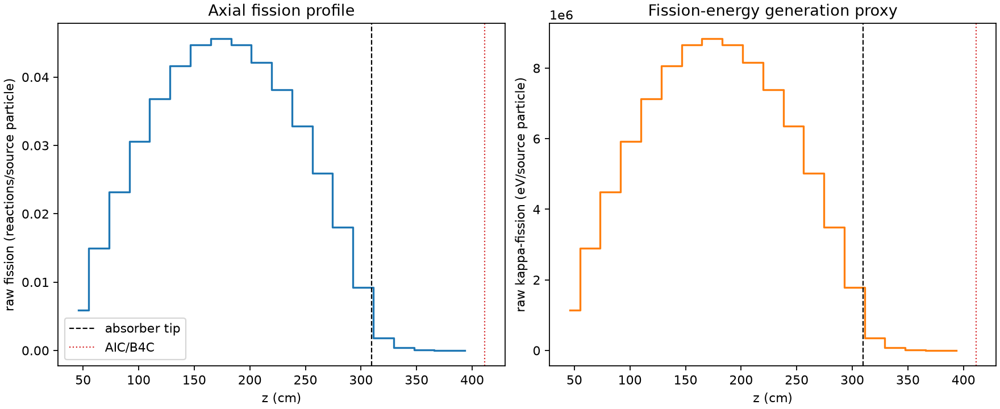
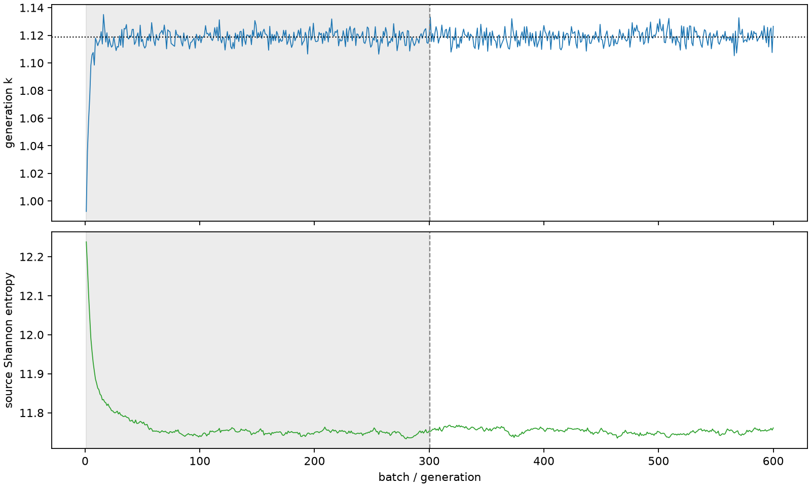

| field | value |
|---|---|
| experiment | V2-STAGE_256_OGRENCI_04-0028 |
| k | 1.1187339289831044 |
| MC standard error | 0.00018736912228477177 |
| seconds | 1070.9903722499948 |
| acceptance | not_assessed |
| convergence | review_required |
Completed is output integrity only; physical and statistical review required. Zero tallies do not prove zero production or zero uncertainty.
| diagnostic | value |
|---|---|
| geometric fuel voxels | 5280 |
| zero fission tally voxels | 0 |
| low signal fuel voxels | 532 |
| low signal fission share | 4.521252211617427e-05 |
| low signal kappa share | 4.5232409330997764e-05 |
| important fission share | 0.9500966396887442 |
| previous filter included | 4748 |
| duration estimate s | 1562.5173488400023 |
| actual minus estimate s | -491.5269765900075 |
| fission relative MC error | statistics |
|---|---|
| all_geometric_fuel | {"voxels": 5280, "positive_mean_voxels": 5280, "zero_mean_voxels": 0, "undefined_relative_error_voxels": 0, "median": 0.009480923700785269, "p95": 0.41658704822118603, "maximum": 0.9859333449354958} |
| low_signal | {"voxels": 532, "positive_mean_voxels": 532, "zero_mean_voxels": 0, "undefined_relative_error_voxels": 0, "median": 0.41447233490695834, "p95": 0.8136065461722255, "maximum": 0.9859333449354958} |
| important_95pct | {"voxels": 3333, "positive_mean_voxels": 3333, "zero_mean_voxels": 0, "undefined_relative_error_voxels": 0, "median": 0.0077917540982508195, "p95": 0.01166636745975784, "maximum": 0.014532645631743942} |
| outside_previous_filter | {"voxels": 532, "positive_mean_voxels": 532, "zero_mean_voxels": 0, "undefined_relative_error_voxels": 0, "median": 0.41447233490695834, "p95": 0.8136065461722255, "maximum": 0.9859333449354958} |
| kappa_fission relative MC error | statistics |
|---|---|
| all_geometric_fuel | {"voxels": 5280, "positive_mean_voxels": 5280, "zero_mean_voxels": 0, "undefined_relative_error_voxels": 0, "median": 0.009470167584694714, "p95": 0.41585482724172057, "maximum": 0.9859325067081413} |
| low_signal | {"voxels": 532, "positive_mean_voxels": 532, "zero_mean_voxels": 0, "undefined_relative_error_voxels": 0, "median": 0.41367299672963376, "p95": 0.8128863509862256, "maximum": 0.9859325067081413} |
| important_95pct | {"voxels": 3333, "positive_mean_voxels": 3333, "zero_mean_voxels": 0, "undefined_relative_error_voxels": 0, "median": 0.007781267135100702, "p95": 0.011654363546072567, "maximum": 0.014514447676393009} |
| outside_previous_filter | {"voxels": 532, "positive_mean_voxels": 532, "zero_mean_voxels": 0, "undefined_relative_error_voxels": 0, "median": 0.41367299672963376, "p95": 0.8128863509862256, "maximum": 0.9859325067081413} |
| axial bin | fission share | kappa-fission share |
|---|---|---|
| 1 | 0.01292878789157911 | 0.012929387346262328 |
| 2 | 0.03267919686780299 | 0.03267903191502384 |
| 3 | 0.05069703752059085 | 0.0506967107335188 |
| 4 | 0.0670004954583734 | 0.06700034362354017 |
| 5 | 0.08070517727705194 | 0.08070513130918407 |
| 6 | 0.09114000038594132 | 0.09113996623403887 |
| 7 | 0.09797308698708809 | 0.09797245451130669 |
| 8 | 0.09986767917314897 | 0.0998676462908874 |
| 9 | 0.09790706557588749 | 0.09790650975237554 |
| 10 | 0.09230034769456005 | 0.09230004919722722 |
| 11 | 0.08358632667312313 | 0.08358608924968988 |
| 12 | 0.07182377699623202 | 0.07182343253977495 |
| 13 | 0.05675896927023971 | 0.05675866028730066 |
| 14 | 0.03951472235000074 | 0.039514643698599326 |
| 15 | 0.02015822734534924 | 0.020158598957221763 |
| 16 | 0.003926120866661688 | 0.003927853591100125 |
| 17 | 0.000816023417611083 | 0.0008164264118075715 |
| 18 | 0.00017462100591289425 | 0.00017470825926973503 |
| 19 | 3.538653078254553e-05 | 3.540395006158076e-05 |
| 20 | 6.950712062703968e-06 | 6.952141809442575e-06 |
Histories include the inactive-to-active transition at batch 300. kappa-fission approximates fission energy production, not total heat deposition.

